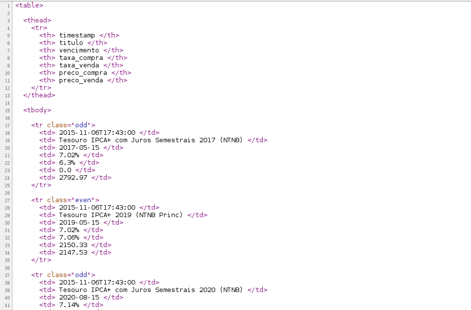

Lendo dados tabulares:
Versão Pythônica
Turicas aka Álvaro Justen
XI PythonBrasil
10 de novembro de 2015, São José dos Campos/SP
Turicas, prazer! =)
{twitter.com, github.com, youtube.com, slideshare.net}/turicas
alvarojusten@gmail.com
turicas.info


#offtopic

Patrocinadores são importantes,
mas retirar voz da comunidade
para
dar voz a quem já tem voz
no momento mais democrático do evento
não é legal! =/
#temqueverissoaí
Bora discutir no bar depois! =)
CSV

#comofaz? #csv
import csv
reader = csv.DictReader(open('tesouro-direto.csv'))
# TODO: identificar dialeto do CSV
for row in reader:
print row # valores são strings. STRINGS!
# TODO: fazer conversor de datetime
# TODO: fazer conversor de date
# TODO: fazer conversor de decimal
# TODO: fazer conversor de percent
HTML

HTML
"A vida não é a porra do teu Toddynho gelado, não!"

#comofaz? #html
pip install lxmlimport lxml.etree
filename = 'tesouro-direto.html'
html = open(filename).read()
tree = lxml.etree.fromstring(html)
table = tree.xpath('//table')[0]
# ... chato chato chato ...
# tentativa
# erro
# erro
# erro
...


XLS

#comofaz? #xls
pip install xlrdimport xlrd
filename = 'tesouro-direto.xls'
book = xlrd.open_workbook(filename, formatting_info=True)
sheet = book.sheet_by_index(0)
NUMERO_DE_COLUNAS = 7 # WTF?
header = [sheet.cell(0, col).value for col in range(NUMERO_DE_COLUNAS)]
NUMERO_DE_LINHAS = 19 # WTF?
data = [[sheet.cell(row, col).value for col in range(NUMERO_DE_COLUNAS)]
for row in range(1, NUMERO_DE_LINHAS + 1)]
for row_data in data:
row = dict(zip(header, row_data))
print row
# TODO: fazer conversor de datetime
# TODO: fazer conversor de date
# TODO: fazer conversor de decimal
# TODO: fazer conversor de percent
Resultado...
{u'preco_compra': 0.0, u'timestamp': 42314.73819444444, u'vencimento': 42801.0, u'taxa_venda': 0.0002, u'taxa_compra': 0.0702, u'preco_venda': 7259.64, u'titulo': u'Tesouro Selic 2017 (LFT)'}..., u'timestamp': 42314.73819444444, ...
rows to the rescue
pip install rows
apt-get install rows
dnf install rows
github.com/turicas/rows
#comofaz? #csv #dojeitocerto
import rows
table1 = rows.import_from_csv('tesouro-direto.csv')
for row in table1:
print row
#comofaz? #xls #dojeitocerto
import rows
table2 = rows.import_from_xls('tesouro-direto.xls')
for row in table2:
print row
#comofaz? #html #dojeitocerto
import rows
table3 = rows.import_from_html('tesouro-direto.html')
for row in table3:
print row
assert list(table1) == list(table2) == list(table3)print table1[0]
Row(timestamp=datetime.datetime(2015, 11, 6, 17, 43),
titulo=u'Tesouro IPCA+ com Juros Semestrais 2017 (NTNB)',
vencimento=datetime.date(2017, 5, 15),
taxa_compra=Decimal('0.0702'),
taxa_venda=Decimal('0.063'),
preco_compra=0.0,
preco_venda=2792.97)
# namedtuple #FTW \o/